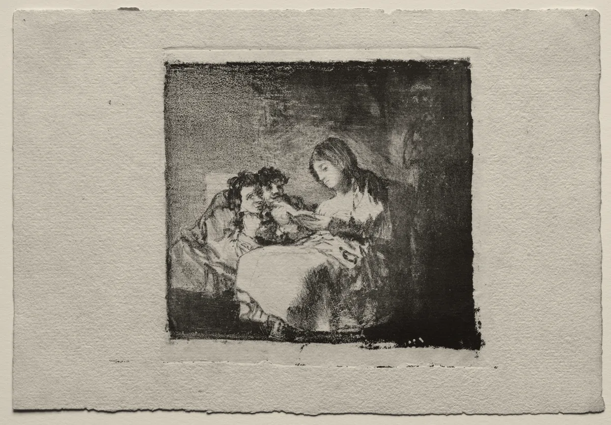

· Edición 78 · 4 min de lectura
Colombia da educación inicial a la mitad de sus niños pequeños

Colombia da educación inicial a la mitad de sus niños pequeños
En pocas palabras. Cuándo se decide buena parte de una vida? Antes de los seis años: jugar y conversar a esa edad rinde por décadas, y en Colombia cerca de la mitad de los niños pequeños recibe educación inicial. De ellos dependerá un país más viejo. El Congreso estudia hacer obligatorio el preescolar desde los tres años; en un ensayo colombiano, funcionó formar a quien enseña.
El dato curioso. El jardín infantil tiene inventor. En 1837, el pedagogo alemán Friedrich Fröbel abrió en Blankenburg una escuela para niños pequeños y luego la llamó Kindergarten, «jardín de niños»: que crecieran como plantas bien cuidadas. En 1851, Prusia prohibió sus jardines; según la Britannica, confundieron a Fröbel con un sobrino suyo de ideas socialistas. La prohibición duró hasta 1860.
¿Qué pasa? Hace unos 40 años, en Kingston (Jamaica), unas trabajadoras de salud visitaban una hora cada semana, durante dos años, a niños pobres con retraso en el crecimiento. Llevaban juguetes caseros y enseñaban a las mamás a jugar con ellos. Veinte años después, por cada 100 pesos que ganaba uno del grupo sin visitas, ellos ganaban 125, según un ensayo publicado en Science en 2014.
En Colombia, la distancia aparece temprano. En barrios de estratos 1 a 3 de Bogotá, los niños más pobres ya iban atrás en lenguaje y razonamiento antes del año y medio, y la brecha crecía con la edad.
Unos 48 de cada 100
Niños colombianos de 0 a 5 años que recibieron educación inicial con atención integral en 2025.
59 de cada 100
Niños del mundo que llegan a primaria con al menos un año de preescolar. El avance lleva casi una década frenado.
1,0 hijo por mujer
La fecundidad de Colombia en 2025, la más baja registrada. Nacieron 441.537 bebés, la cifra más baja en diez años.
Fuente: Unesco, Unicef y OCDE (2026); Ministerio de Educación, citado en un análisis académico (2026); DANE, citado por Infobae y El Universal
¿Y a mí qué? Los niños que hoy tienen tres años tendrán 27 en 2050. Serán menos, y de su trabajo dependerán pensiones y cuidados de sus padres y abuelos.
¿Por qué pasa? Invertir en un niño pequeño es como sembrar un árbol frutal en una casa arrendada: quien lo siembra paga hoy, y la cosecha la recoge otro inquilino.
- El costo es de hoy; el beneficio, de dentro de 20 años. Un gobierno de cuatro años paga y no ve los resultados.
- La calidad cuesta más que el cupo. Contar niños es fácil; formar a quien los atiende, no.
- El sistema está partido. El ICBF y el Ministerio de Educación tienen programas distintos para la misma edad.
¿Alguien lo ha resuelto? Colombia tiene sus pruebas. En 2010, en 96 municipios, visitadoras enseñaron a familias de Familias en Acción a jugar con juguetes caseros. Al año y medio, los niños razonaban y entendían mejor el lenguaje, según BMJ.
En 120 Hogares Infantiles del ICBF, dar más materiales y personal no mejoró el desarrollo de los niños. Formar a las maestras, por videoconferencia y a bajo costo, sí, sobre todo en los más pobres, según el Journal of Political Economy (2024).
En el mundo, cada dólar invertido sumaría casi cuatro a la economía hacia 2035, estima el informe que la Unesco, Unicef y la OCDE presentaron el 20 de noviembre.
Pero ojo.
- Las ventajas se pueden borrar. Dos años después del ensayo de las visitas, ya no había diferencia medible.
- Un preescolar malo puede ser peor que nada. En Tennessee (Estados Unidos), los niños que ganaron por sorteo un cupo en el preescolar público tenían peores notas en sexto grado, según un ensayo de 2022.
- Obligar no es dar. Sin maestras formadas, la obligación se queda en el papel.
Lo que ya habíamos contado. El 23 de octubre escribimos que hacia 2036 Colombia tendrá más mayores de 60 años que niños (ver esa edición).
Qué hacer con esto
Para ir pensando. Al elegir jardín u hogar del ICBF, pregunte por la formación de quien enseña y cuántos niños atiende cada adulto.
Cómo prepararse. Conversar, leer y jugar a diario con un niño pequeño: es lo que llevaban las visitadoras de Jamaica y de Colombia.
Ojo con el cuento. «Ampliamos la cobertura» dice cuántos niños entraron, no cuánto aprendieron. Pida la otra mitad del dato: cuántas maestras se formaron.
Dos lecturas
Las dos posturas sobre el tema, en su mejor versión
Hacerlo obligatorio desde los tres años. Lo que no es obligatorio se recorta en cada presupuesto. Ponerlo en la Constitución obliga al Estado a abrir cupos y le da a cada familia un derecho que puede reclamar.
Primero la calidad, después la obligación. Con la mitad de los niños por fuera y maestras sin formar, una obligación nueva puede llenar salones sin enseñar. Mejor crecer donde ya hay calidad, y medir.
Quién decide y cuándo
Quién decide. El Congreso. El proyecto de acto legislativo 228 de 2026, «De preescolar a once», haría obligatoria la educación de los 3 a los 17 años. Pasó el primer debate en la Comisión Primera de la Cámara en octubre.
Cuándo. Necesita ocho debates en dos legislaturas; los cuatro primeros, antes del 20 de junio de 2027. (Conocimiento general.)
Cómo participar. Escribir a los congresistas o seguir el trámite en el sitio de la Cámara.
Seguimiento de la decisión
Pendiente · plazo:
Congreso de Colombia: plenaria de la Cámara, luego Comisión Primera y plenaria del Senado: Aprobar en primera vuelta el proyecto de acto legislativo 228 de 2026 Cámara («De preescolar a once»), que cambiaría el artículo 67 de la Constitución para que la educación sea obligatoria desde los 3 años, con prejardín, jardín y transición, y hasta el grado once.
Aprobado en primer debate en la Comisión Primera de la Cámara en octubre de 2026. Una reforma a la Constitución necesita ocho debates en dos legislaturas seguidas; entendemos que los cuatro primeros deben terminar antes del 20 de junio de 2027, cuando acaba la legislatura (Constitución, artículo 375).
La paradoja del día
Lo más absurdo de la edición, en dos líneas
En 1851, Prusia cerró los jardines infantiles, según la Britannica por confundir a dos Fröbel. En 2026 nadie los prohíbe, y aun así cerca de la mitad de los niños pequeños de Colombia se queda sin el suyo.
Para conversar
La pregunta. Si el preescolar fuera obligatorio desde los tres años, ¿qué exigiría primero: un cupo para todos o una maestra bien formada en cada salón?
Para leer más
Libros para seguir con el tema
¿Padres jardineros o padres carpinteros? , de Alison Gopnik (Ediciones Martínez Roca, 2018; traducción de María Jesús Asensio Tudela). Una psicóloga del desarrollo explica cómo aprenden los niños pequeños y por qué el juego importa tanto.
¿Le interesa ver las fuentes?
Todos los documentos y datos que usamos
29 fuentes: 11 académicas, 7 oficiales, 9 de prensa, 2 de referencia.
- Oficial Unesco (20 de noviembre de 2026). UNESCO report calls for greater investment in pre-primary education, every dollar invested yielding nearly four
- Oficial Unesco. Launch of the 2026 Global Report on Early Childhood Care and Education
- Prensa Xinhua (20 de noviembre de 2026). UNESCO: Investment in early childhood education could generate nearly fourfold economic returns
- Prensa Devdiscourse (noviembre de 2026). Rising costs of failing to invest in children's preschool education: UNESCO report
- Académica Universidad de California en Berkeley, noticias (29 de mayo de 2014). Study shows early childhood stimulation intervention in Jamaica yields later earnings benefits (sobre Gertler y otros, Science, 2014)
- Académica Gertler, Heckman y otros, NBER, documento de trabajo 19185. Labor Market Returns to Early Childhood Stimulation: a 20-year Followup to an Experimental Intervention in Jamaica
- Académica Attanasio y otros, BMJ (29 de septiembre de 2014). Using the infrastructure of a conditional cash transfer program to deliver a scalable integrated early child development program in Colombia: cluster randomized controlled trial
- Académica Andrew y otros, PLOS Medicine (2018), en PubMed Central. Impacts 2 years after a scalable early childhood development intervention to increase psychosocial stimulation in the home: a follow-up of a cluster randomised controlled trial in Colombia
- Académica Andrew, Attanasio, Bernal y otros, Journal of Political Economy, vol. 132, n.º 7 (2024). Preschool Quality and Child Development
- Académica Rubio-Codina, Attanasio y otros, Journal of Human Resources, vol. 50, n.º 2 (2015). The Socioeconomic Gradient of Child Development: Cross-Sectional Evidence from Children 6-42 Months in Bogota
- Académica Durkin, Lipsey, Farran y Wiesen, Developmental Psychology (2022), en PubMed Central. Effects of a statewide pre-kindergarten program on children's achievement and behavior through sixth grade
- Académica Universidad de los Andes, Facultad de Educación. Recomendaciones al Gobierno: primera infancia
- Académica ResearchGate (2026). Análisis de la situación del desarrollo en la primera infancia en Colombia y recomendaciones de política
- Oficial Instituto Colombiano de Bienestar Familiar (ICBF). Informe de gestión consolidado 2025
- Prensa El Heraldo (14 de septiembre de 2026). «La mitad de niños en Colombia no accede a atención integral»
- Prensa Vanguardia (20 de agosto de 2026). De Cero a Siempre cumple 10 años: la deuda de Colombia con la primera infancia
- Prensa Infobae (25 de septiembre de 2026). Colombia registra más nacimientos en 2026, pero la fecundidad toca mínimo histórico: así cambió la población
- Prensa El Universal (25 de septiembre de 2026). Nacimientos en Colombia caen a mínimo de una década: DANE revela cifras
- Prensa El Tiempo (octubre de 2026). Comisión Primera de Cámara aprueba en primer debate proyecto que busca ampliar la edad de escolaridad obligatoria en Colombia
- Prensa Blu Radio (octubre de 2026). Proyecto para ampliar la educación obligatoria hasta los 17 años supera primer debate en la Cámara
- Oficial Función Pública, Gestor Normativo. Constitución Política de Colombia (artículos 67, 138 y 375)
- Oficial Función Pública, Gestor Normativo. Ley 724 de 2001, por la cual se institucionaliza el Día de la Niñez y la Recreación
- Académica German History in Documents and Images, Instituto Histórico Alemán de Washington. Friedrich Froebel (c. 1840)
- Referencia Encyclopaedia Britannica. Friedrich Froebel
- Referencia Planeta de Libros (ficha del libro). ¿Padres jardineros o padres carpinteros?, de Alison Gopnik (Ediciones Martínez Roca, 2018)
- Oficial Noticias ONU (22 de noviembre de 2026). COP31 ends without climate pact as UN chief warns there is «no ambiguity in the science»
- Prensa ABC (Australia) (23 de noviembre de 2026). COP31 ends without deal after climate change talks break down
- Oficial Organización Mundial de la Salud. World AMR Awareness Week 2026
- Académica Escuela de Salud Pública de Harvard (noviembre de 2026). Hyperscale data centers' energy consumption, carbon emissions newly estimated by researchers
Glosario
Las palabras técnicas, explicadas
- Educación inicial: la que reciben los niños antes de primero de primaria, en jardines, hogares del ICBF o visitas a la casa. No es solo cuidar: es jugar, conversar y aprender.
- Atención integral: cuando un niño recibe a la vez educación inicial, salud, nutrición y registro civil, según la política De Cero a Siempre (Ley 1804 de 2016).
- Prejardín, jardín y transición: los tres grados del preescolar, para niños de 3, 4 y 5 años. Hoy solo transición es obligatorio.
- Acto legislativo: una reforma a la Constitución que aprueba el Congreso. Necesita más debates que una ley.
- Ensayo aleatorizado: un estudio que reparte a las personas al azar entre quienes reciben un programa y quienes no, para comparar de forma justa.
Nota metodológica
Cómo se hizo esta edición y qué no pudimos verificar
El horizonte. ¿Cambia el rumbo de cómo vive la gente, en Colombia o en el mundo, dentro de 10 a 50 años? Sí. Los ensayos de Jamaica y de Tennessee muestran efectos que duran 20 años o más, para bien o para mal. Colombia tiene la fecundidad más baja de su historia (1,0 hijo por mujer en 2025, según el DANE) y en 2036 tendría más mayores de 60 años que niños: los niños de hoy serán, entre 2040 y 2070, la generación que sostenga a un país más viejo. La proyección institucional de fondo es la del informe de la Unesco, Unicef y la OCDE, con su estimación a 2035.
El filtro. Entra por la puerta del nudo, con las cuatro condiciones: persiste (cerca de la mitad de los niños por fuera, diez años después de la ley De Cero a Siempre, y el avance mundial frenado desde hace casi una década); tiene un mecanismo (el costo cae en el presupuesto de hoy y el beneficio llega dos décadas después, a otros gobiernos y otros sectores; la calidad es más cara que el cupo; los programas están repartidos); alguien lo puede cambiar (el Congreso, el Ministerio de Educación, el ICBF y el Ministerio de Hacienda); y causa daño comprobable (la brecha de desarrollo medida en Bogotá antes del año y medio; la diferencia de ingresos en el ensayo de Jamaica). Es un nudo estructural: si no se desata, la brecha acompaña a millones de personas toda la vida. La puerta de entrada es el informe mundial presentado el 20 de noviembre, Día Mundial de la Infancia, junto con el proyecto de reforma en la Cámara. Es lunes: la mezcla de la semana empieza de cero. Buscamos un tema que no fuera salud, energía ni ambiente, que llenaron las dos últimas semanas.
Puntaje. De 1 a 3 en cada criterio; peso en la vida y horizonte valen doble (máximo 24). Solo entra un tema con horizonte 3.
| Tema | Puerta | ¿Cambia el rumbo en 10 a 50 años? | Alcance | Peso | Horizonte | Cercanía | Margen | Mirada | Total | Resultado |
|---|---|---|---|---|---|---|---|---|---|---|
| Educación inicial y primera infancia | nudo | Sí: la generación que sostendrá a un país más viejo | 3 | 3 | 3 | 3 | 2 | 2 | 22 | Elegido (edición 78) |
| Resistencia a los antimicrobianos: plan de la OMS 2026-2036 (mundo) | fondo | Sí: si los antibióticos siguen sirviendo | 3 | 3 | 3 | 2 | 1 | 1 | 19 | Contado el 6 de noviembre |
| COP31 sin acuerdo (mundo) | contexto | Sí: cuánto se calienta el planeta | 3 | 2 | 3 | 2 | 1 | 1 | 17 | Va como actualización |
| Electricidad de los centros de datos (mundo) | fondo | Sí, a la larga | 2 | 2 | 3 | 1 | 1 | 2 | 16 | Sin canal claro hacia Colombia |
En el tema elegido, el peso vale 3: toca aprendizaje, ingreso y salud. El margen vale 2: hay una reforma en trámite, pero sin fecha de debate en la plenaria, y algo concreto que hacer en casa. La mirada vale 2: la prensa contó el informe mundial y el primer debate por separado; no encontramos quien los uniera con los ensayos hechos en Colombia. Ningún otro tema llega a 19 sin repetir lo reciente, así que hoy hay una sola edición.
Hicimos unas 35 búsquedas en español e inglés. No pudimos abrir los documentos completos: ni el informe de la Unesco, ni los estudios, ni las páginas del Congreso, el ICBF o la Unesco. Trabajamos con resúmenes, fragmentos y resultados de búsqueda, y no les atribuimos más de lo que dicen. De 29 fuentes, 20 no son de prensa.
Quedó sin verificar o con límites:
- La mitad de los niños. El «unos 48 de cada 100» es el dato del Ministerio de Educación para 2025 que cita un análisis académico publicado en ResearchGate, que no pudimos abrir completo. Va en la misma dirección que la Universidad de los Andes («cerca de la mitad de los menores de seis años accede a alguna modalidad de educación inicial») y que la entrevista de El Heraldo. El ICBF reporta más de dos millones de niños, gestantes y lactantes atendidos en 2025; las cifras miden cosas distintas.
- El informe mundial. El «casi cuatro por cada dólar» (3,76 hacia 2035) y el 59 de cada 100 los conocemos por la Unesco y la prensa; no leímos el informe. El retorno es la estimación de un modelo, no una cuenta cerrada. Una página de la Unesco fecha el lanzamiento el 10 de noviembre; la mayoría de las fuentes, el 20.
- Jamaica. El 25% es la cifra de la versión publicada en Science (2014), según la Universidad de California en Berkeley; una versión anterior del mismo estudio daba 42%. «Hace unos 40 años» es nuestra cuenta: el programa empezó a finales de los ochenta.
- Bogotá y Tennessee. De estos estudios usamos lo que dicen sus resúmenes; las brechas se miden en unidades estadísticas que no traducimos a cifras.
- El proyecto de reforma. El número 228 de 2026 y el primer debate en octubre vienen de la prensa; una fuente lo fecha el 14 de octubre y no lo confirmamos en la Gaceta. Que la primera vuelta deba terminar el 20 de junio de 2027 es nuestra lectura del artículo 375 de la Constitución.
- La fecundidad y los nacimientos. Son cifras del DANE que conocemos por la prensa; las de 2025 son preliminares.
- El dato curioso. Las fuentes dan 1837 para la escuela y 1840 para el nombre; la confusión con el sobrino es la explicación de la Britannica, y otras fuentes dan otras razones para la prohibición.
La imagen es una litografía de Francisco de Goya, de 1824-1825, de la colección abierta del Cleveland Museum of Art (dominio público). No muestra un jardín infantil: es una mujer que lee a dos niños, y la elegimos por eso. Commons rechazó nuestras consultas por exceso de pedidos y el Met no nos dejó descargar una litografía de 1828 de la primera escuela para niños pequeños de Nueva York.
El libro: no pudimos consultar el catálogo de Santo & Seña, así que va sin enlace. La editorial, el año y la traductora los confirmamos en la ficha de Planeta de Libros.